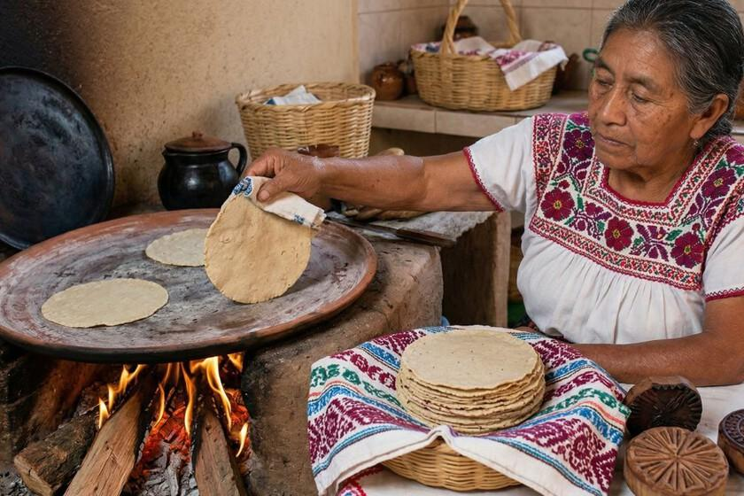
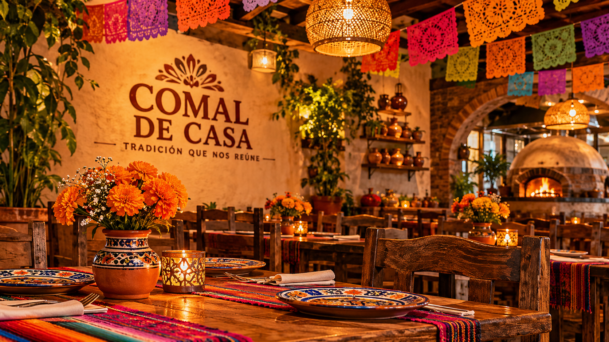
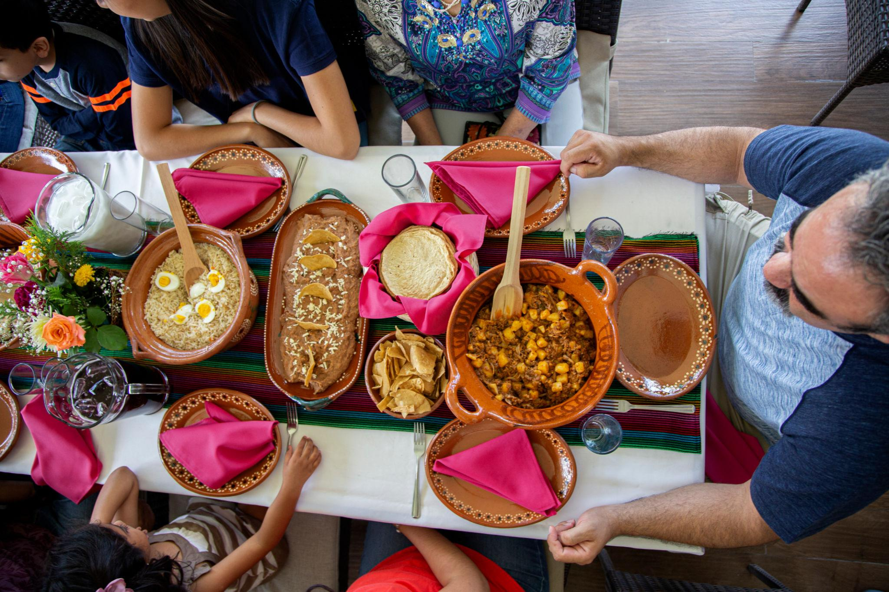
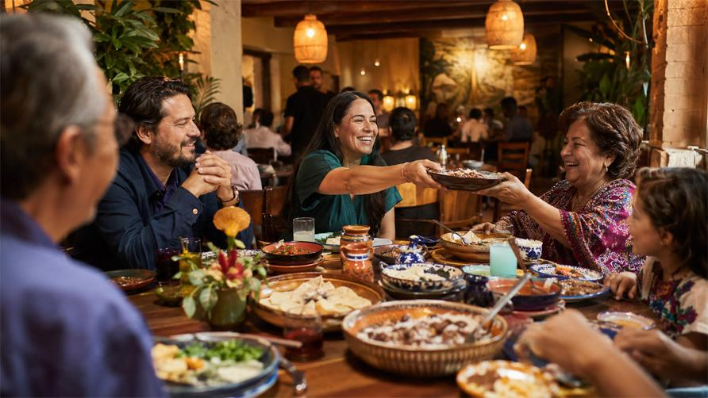
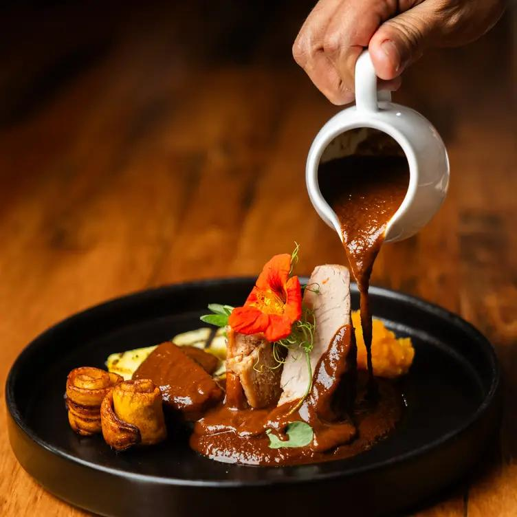
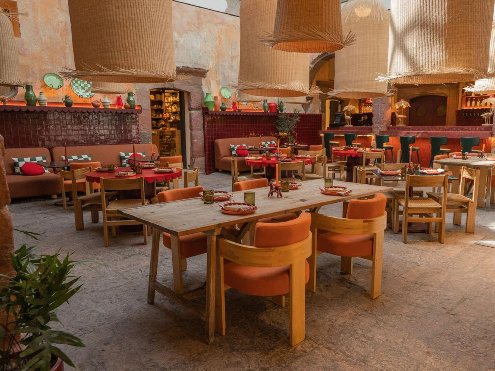
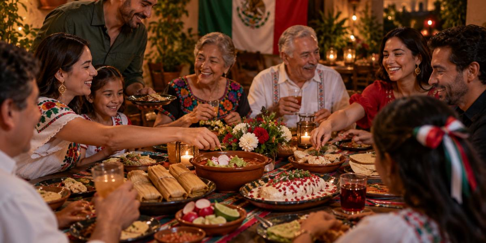

Tradición
Respetamos las raíces y recetas de la gastronomía mexicana.
El sabor de mexico

Una historia construida alrededor de la tradición, la familia y el amor por la gastronomía mexicana.
Más que un restaurante, un lugar para volver a casa.
Comal de Casa nace como una propuesta gastronómica inspirada en la riqueza cultural de México. Somos un restaurante que busca acercar a nuestros clientes a los sabores, aromas y costumbres de la cocina tradicional mexicana.
Nuestro propósito es ofrecer un espacio donde cada plato represente una experiencia, donde compartir la comida sea una oportunidad para crear recuerdos y donde cada visita se sienta como llegar a casa.

Este proyecto surge de la admiración por la gastronomía mexicana y de la intención de preservar sus tradiciones a través de una experiencia cercana, familiar y auténtica.
Además de tomar como inspiración otros restaurantes de comida mexicana como lo es "Guadalupe".
En Comal de Casa, creemos que la comida es más que una necesidad; es una forma de conectar con nuestras raíces, celebrar nuestra culture y compartir momentos especiales con quienes nos importan. Nuestra filosofía se basa en la autenticidad, la calidad y el respeto por los ingredientes frescos y las recetas tradicionales que han sido transmitidas de generación en generación.

Respetamos las raíces y recetas de la gastronomía mexicana.

Creamos espacios para compartir y disfrutar.

Cuidamos cada detalle de nuestra propuesta gastronómica.

Buscamos que cada visita sea especial.
Ofrecer experiencias gastronómicas inspiradas en la cocina tradicional mexicana, brindando productos de calidad y un ambiente familiar que permita a nuestros clientes disfrutar y compartir.
Consolidarnos como un restaurante referente de gastronomía mexicana tradicional, reconocido por nuestra identidad, calidad y compromiso con la cultura culinaria.

Ven a descubrir nuestros sabores, conoce nuestra carta y comparte con nosotros una experiencia llena de tradición.